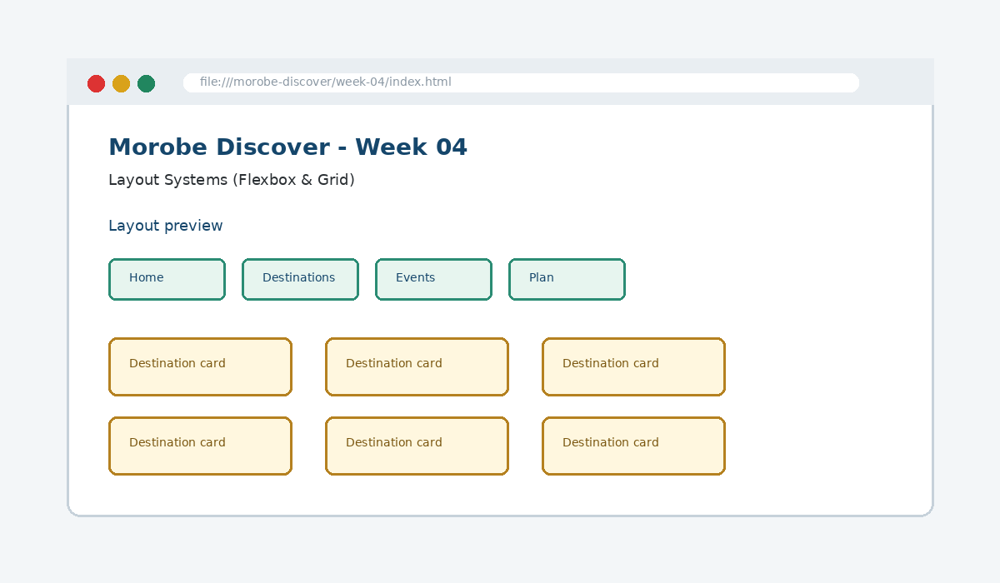

Layout Systems (Flexbox & Grid)
Manage one-dimensional and two-dimensional layouts for complex page sections.

How this week's learning connects
1. Reading
Build the conceptual foundation and vocabulary for Layout Systems (Flexbox & Grid).
2. Lecture
Inspect the core principle, code patterns and visible browser result.
3. Lab
Complete the guided build tasks with checkpoints, testing and Git evidence.
4. Morobe Discover
Integrate the result into the same project and preserve earlier features.
Flexbox
Aligns items along one main axis.
Grid
Creates rows and columns together.
gap
Adds maintainable spacing without margin hacks.
Read the code line by line
.site-nav {
display: flex;
gap: 1rem;
align-items: center;
}.card-grid {
display: grid;
grid-template-columns: repeat(3, 1fr);
gap: 1.25rem;
}What it does → Why it works → Where we use it
display: flex
Makes .site-nav a Flexbox container.gap: 1rem
Adds spacing between navigation items without individual margins.align-items: center
Aligns items across the cross axis.display: grid
Makes .card-grid a two-dimensional Grid container.repeat(3, 1fr)
Creates three equal-width columns.
Project connection: This code belongs to the Week 04 Morobe Discover increment and should produce a visible or testable change related to Flexbox navigation, aligned forms and Grid destination cards.
Editable browser playground
Modify the example, run it, break it deliberately, and reset it. The preview is isolated from the course page.
Morobe Discover tasks
- Convert navigation into a Flexbox row
- Align form controls with consistent gap
- Create a card gallery with CSS Grid
- Use container width to improve readability
- Remove manual spacing hacks
Checkpoint tests
Morobe Discover — Week 04
This is the actual source project increment supplied for this week.
Check your understanding
Knowing the definition is not enough
A weak submission can define Layout Systems (Flexbox & Grid) but cannot point to the exact Morobe Discover file, code line and browser result. During code defence, be ready to connect code → visible behaviour → user reason → test evidence.
Prepare the next checkpoint
Week 05 adapts these layouts for mobile, tablet and desktop using responsive design.